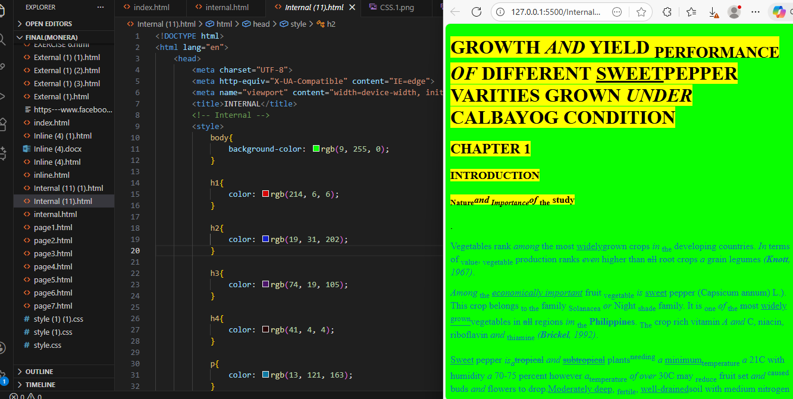
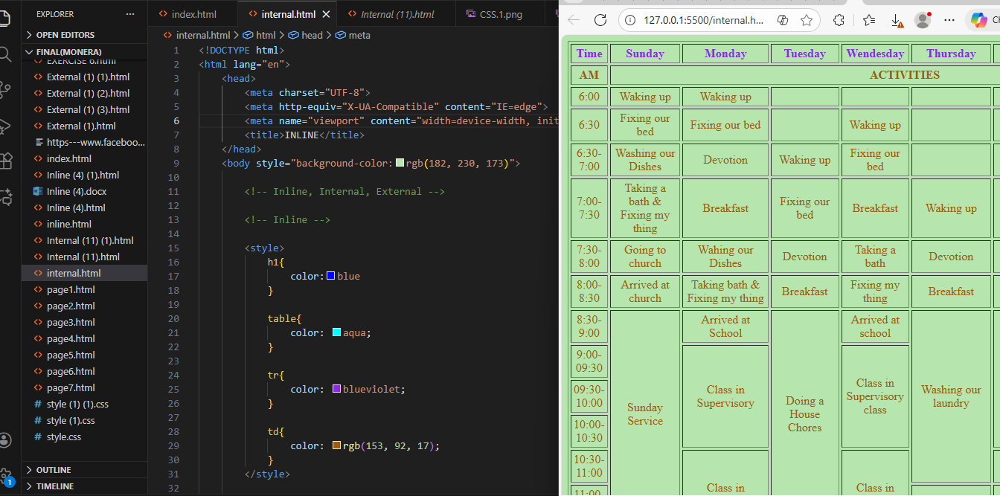
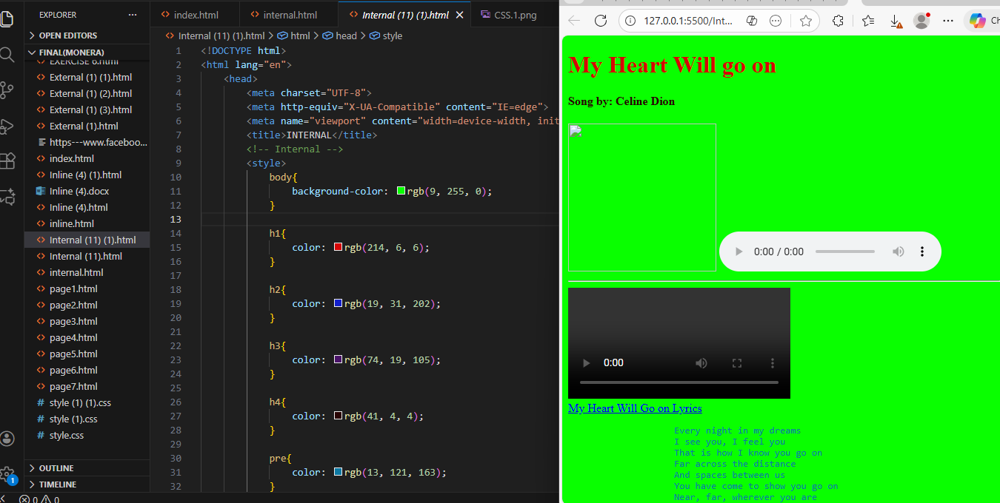
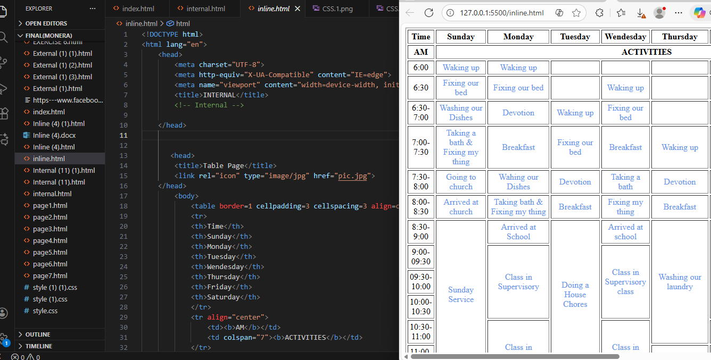
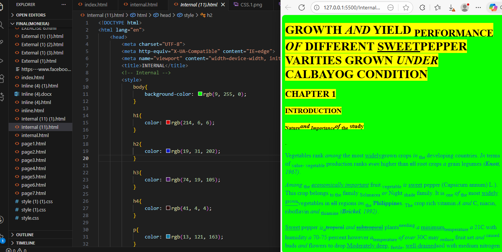
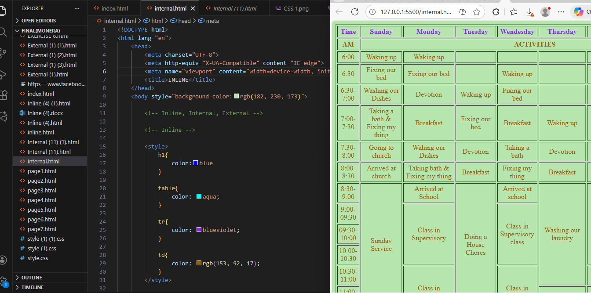
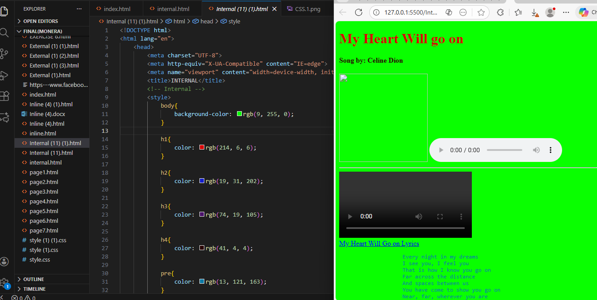
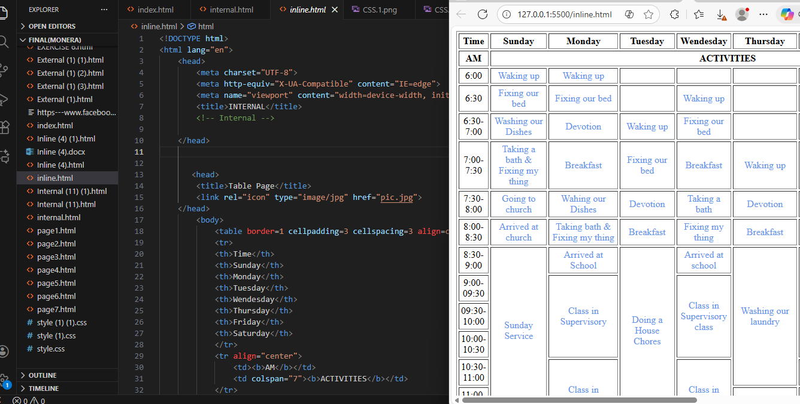

As I learned about inline, internal, and external CSS, I discovered that each method impacts the ease of building a webpage. Inline CSS is convenient for quick changes, but overusing it leads to cluttered code. Internal CSS is more structured, as all styles are grouped in one section of the HTML file. However, external CSS revealed the real benefit of keeping design in a separate file — a single stylesheet can manage the appearance of an entire website. Learning these three approaches gave me a clear understanding of the different ways to create a website.
 






